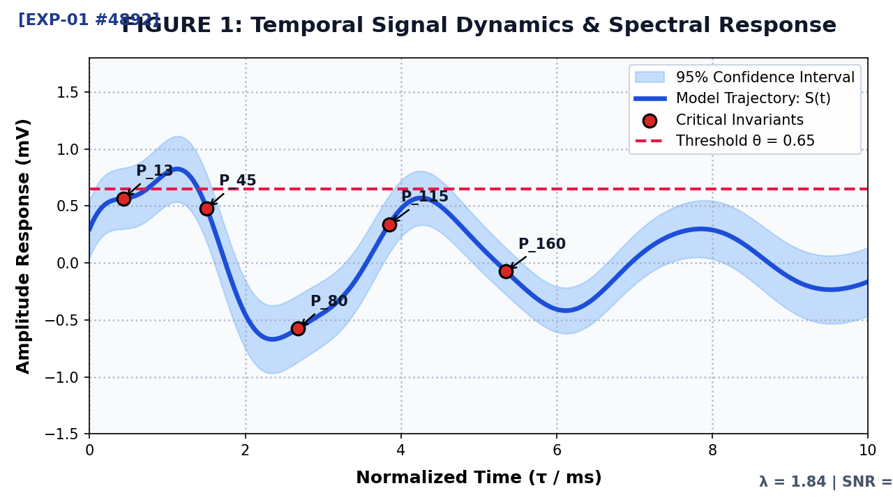
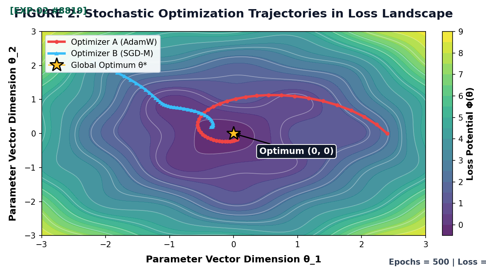

Faculty of Computer Science • Technion – Israel Institute of Technology
We investigate adaptive signal recovery dynamics and high-dimensional parameter optimization. In standard print media, static figures fail to convey temporal progression and phase-space convergence trajectories. Through integrated Web Augmented Reality (WebAR) powered by MindAR, attendees can scan the graphs below directly using their mobile browser—without installing any application—to view the full dynamic simulations in situ over the poster.

Figure 1: Temporal Signal Dynamics & Spectral Response. Point camera to trigger real-time wave propagation, variance decay, and critical point phase transitions.

Figure 2: Multi-Agent Trajectories Across Non-Convex Loss Landscape. Point camera to view animated path convergence, gradient descent step progression, and saddle avoidance.
Target 1 models stochastic damped oscillations under non-stationary Gaussian noise. The augmented overlay visualizes instantaneous frequency sweeps across normalized millisecond time-steps with 95% confidence bands.
Target 2 illustrates the empirical trajectory of adaptive momentum algorithms navigating multimodal loss potentials. The AR overlay renders agent stepping vectors and gradient vector fields in real time.